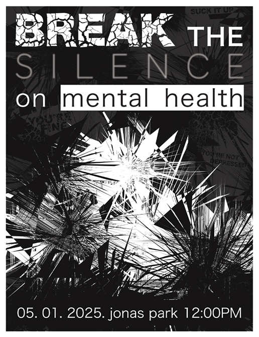
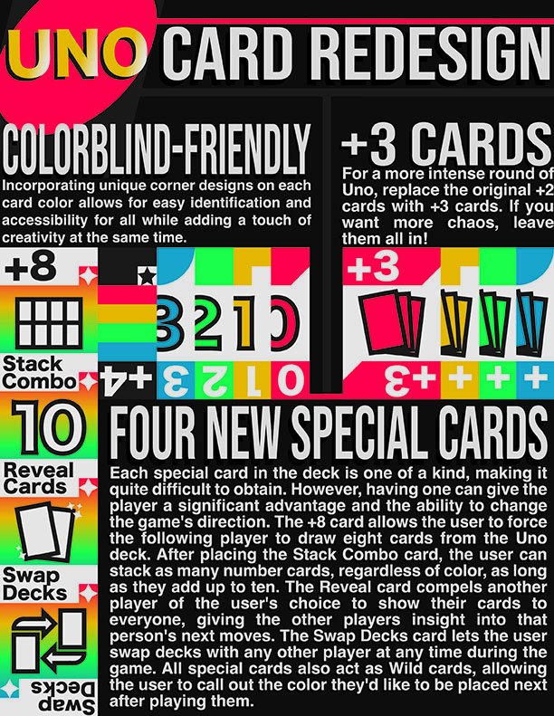
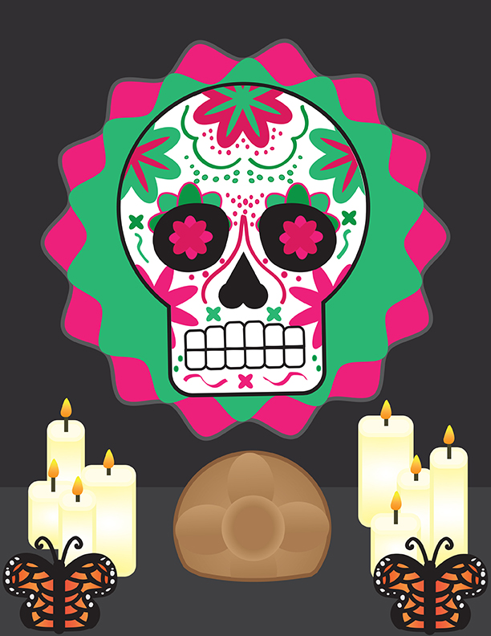
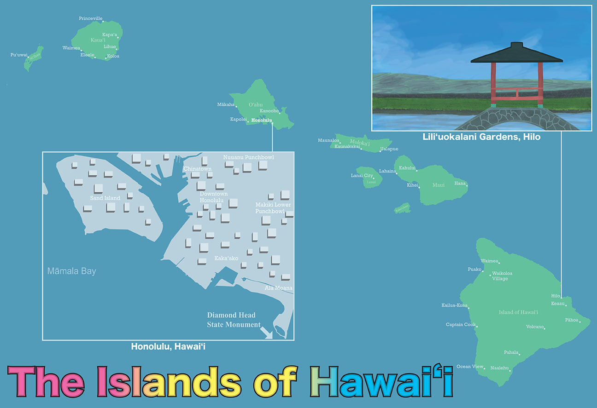
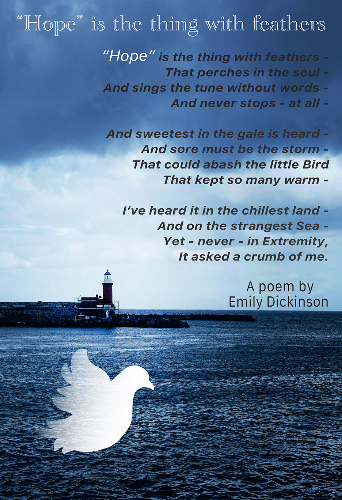
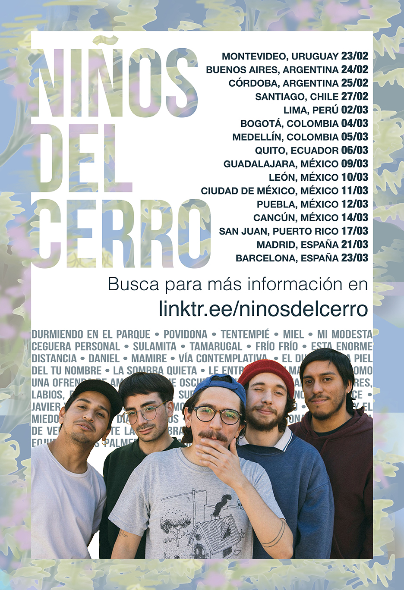
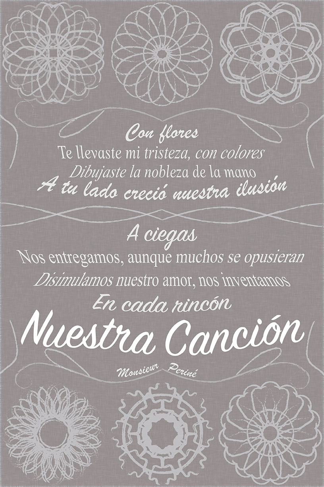

This collection represents a diverse range of visual communication, focusing on the power of the poster as a medium for information, emotion, and culture. The goal of this anthology was to explore different typographic systems and illustrative styles—ranging from strict data-mapping of an infographic to the organic, including vibrant details of cultural illustration.






Each poster in this anthology has a unique visual hook—whether it was the path of a map or the structure of a stanza. My process for the Nuestra Canción and Sugar Skull pieces specifically reflects my identity, incorporating vibrant palettes and cultural motifs. By treating each poster as a standalone problem to solve, I've developed a workflow that prioritizes clarity of message without sacrificing artistic flair. Each work in the series feels cohesive to my style while also showing my breadth and range.
